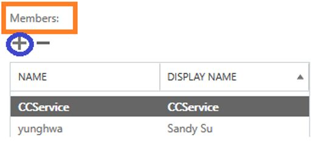
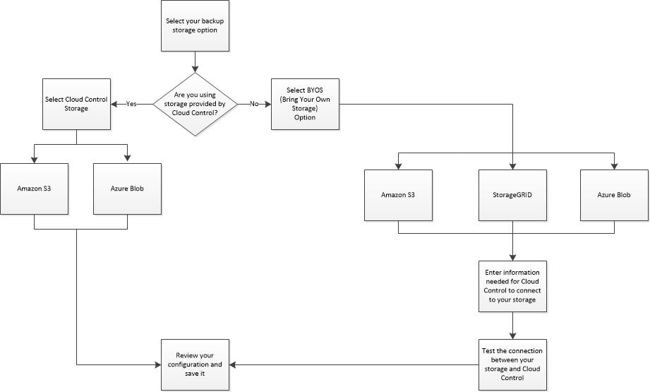

Erste Schritte mit einem kostenpflichtigen Abonnement von SaaS Backup für Office 365 Bearbeiten Sie auf GitHub Dokumentänderungen anfordern
Mitwirkende
Die ersten Schritte mit NetApp SaaS Backup für Office 365 umfassen verschiedene Schritte, z. B. die Entscheidung, welchen Speichertyp Sie zum Sichern Ihrer Daten verwenden möchten, das Sammeln relevanter Informationen, das Erstellen eines MS Office 365-Dienstkontos und das Zuweisen von Benutzerberechtigungen.
- Festlegen, welcher Speichertyp zum Sichern Ihrer Daten verwendet werden soll
- Sammeln von Informationen zu Ihrer SaaS Backup for Office 365-Speicherplattform
- Erstellen eines neuen MS Office 365-Dienstkontos mit globalen Administratorrechten
- Zuweisen von Benutzerberechtigungen zu Ihrem MS Office 365-Dienstkonto
- Melden Sie sich für SaaS Backup für Office 365 an
- Verschieben ungeschützter Daten in einen geschützten Zustand
- Durchführen einer sofortigen Sicherung einer bestimmten Sicherungsrichtlinie
Festlegen, welcher Speichertyp zum Sichern Ihrer Daten verwendet werden soll
NetApp SaaS Backup für Office 365 Control bietet Amazon S3-Speicher und Azure Blob-Speicher als Sicherungsoptionen. Mit SaaS Backup für Office 365 können Sie auch Ihren eigenen Speicher (BYOS) mitbringen, um Ihre Daten zu sichern. Wenn Sie den von SaaS Backup bereitgestellten Speicher verwenden möchten, müssen Sie vor der Anmeldung keine Informationen sammeln. Wenn Sie die Option BYOS wählen, müssen Sie vor der Anmeldung relevante Informationen zu Ihrem Speicher sammeln.
Sammeln von Informationen zu Ihrer SaaS Backup for Office 365-Speicherplattform
Sie benötigen die folgenden Informationen, um Ihren BYOS Amazon S3-Speicher, den StorageGRID Webscale-Objektspeicher oder den Azure Blob-Speicher einzurichten.
Amazon S3
Wenn Sie den von SaaS Backup bereitgestellten Amazon S3-Bucket verwenden, müssen Sie diese Informationen nicht erfassen. Wenn Sie Ihren eigenen Amazon S3-Bucket verwenden, müssen Sie die folgenden Informationen erfassen:Name des Eimers
Region
Zugangsschlüssel
Geheimer Schlüssel
StorageGRID Webscale
SaaS Backup erstellt den StorageGRID Webscale-Bucket nicht. Es muss schon existieren.Host / IP-Adresse
Sie müssen eine öffentliche IP-Adresse und einen Domänennamen mit einem Zertifikat haben, z. B. webscale.netapp.com. Sie müssen auch das TLS-Protokoll (Transport Layer Security) 1.2 verwenden.Hafen
Der offene Port sollte je nach Konfiguration 8082 oder 443 sein.Name des Eimers
Zugangsschlüssel
Geheimer Schlüssel
Azure Blob
Kontobezeichnung
Containername
Zugangspunkt
Zugangsschlüssel
Region
Erstellen eines neuen MS Office 365-Dienstkontos mit globalen Administratorrechten
Es wird empfohlen, ein neues Microsoft Office 365-Dienstkonto mit globalen Administratorberechtigungen zu erstellen, wenn Sie sich für SaaS Backup für Office 365 anmelden. Das Erstellen eines neuen Kontos ist jedoch nicht erforderlich. Wenn Sie möchten, können Sie Ihr vorhandenes Microsoft Office 365-Dienstkonto verwenden.
Melden Sie sich bei Ihrem Office 365-Verwaltungsportal mit einem Konto mit Administratorrechten an.
Klicken Sie auf Benutzer .

Wählen Sie Aktive Benutzer aus , und klicken Sie dann auf Benutzer hinzufügen .

Geben Sie die Details des neuen Dienstkontos ein.
Vorname
Nachname
Anzeigename
Nutzername
Der Benutzername ist der Name des Dienstkontos.
Erweitern Sie Rollen , wählen Sie Globaler Administrator als Rolle aus und klicken Sie dann auf Hinzufügen .

Die Dienstkontodetails werden an den Administrator gesendet.Melden Sie sich mit dem neuen Konto bei Ihrem Office 365-Verwaltungsportal an, um es zu aktivieren.
Stellen Sie sicher, dass das Dienstkonto mindestens Lizenzen für Exchange Online und SharePoint Online enthält.
Dies ist besonders wichtig, wenn Sie die einzelnen Lizenzen für die globale Administratorrolle einschränken.
Zuweisen von Benutzerberechtigungen zu Ihrem MS Office 365-Dienstkonto
Bevor Sie sich für SaaS Backup anmelden, müssen Sie Ihrem Microsoft Office 365-Dienstkonto Benutzerberechtigungen zuweisen. Der Vorgang zum Zuweisen von Benutzerberechtigungen hängt von den Microsoft-Diensten (Exchange Online, SharePoint Online, OneDrive for Business) ab, die Sie mit SaaS Backup verwenden.
Zuweisen von Benutzerberechtigungen für Microsoft Exchange online
Wenn Sie SaaS Backup mit Microsoft Exchange Online verwenden möchten, müssen Sie den Identitätswechsel konfigurieren. Durch den Identitätswechsel kann Ihr Microsoft Office 365-Dienstkonto die Identität von Benutzerkonten annehmen und auf zugehörige Berechtigungen zugreifen.
Führen Sie die MSDN PowerShell-Befehle aus , um den Identitätswechsel automatisch zu konfigurieren.
So konfigurieren Sie den Identitätswechsel manuell:
Verwenden Sie das Exchange Admin Center oder ein Administratorkonto, um sich bei Ihrem Microsoft Office 365-Dienstkonto anzumelden.
Wählen Sie die Registerkarte Exchange .
Wählen Sie im linken Navigationsbereich unter Dashboard die Option Berechtigungen aus .
Klicken Sie auf Administratorrollen .
Doppelklicken Sie im rechten Fensterbereich auf Discovery-Verwaltung .
Klicken Sie unter Rollen auf das Symbol + .

Wählen Sie ApplicationImpersonation aus dem Dropdown-Menü.
Klicken Sie auf Hinzufügen .
Klicken Sie auf OK .
Stellen Sie sicher, dass ApplicationImpersonation unter Rollen hinzugefügt wurde.
Klicken Sie unter Mitglieder auf das Symbol + .

Ein neues Fenster erscheintWählen Sie den Benutzernamen.
Klicken Sie auf Hinzufügen .
Klicken Sie auf OK .
Stellen Sie sicher, dass der Benutzername im Abschnitt Mitglieder angezeigt wird.
Klicken Sie auf Speichern .
Melden Sie sich für SaaS Backup für Office 365 an
Sie können sich mit Ihrem Microsoft Office 365-Dienstkonto oder mit Ihrem NetApp SSO-Konto für SaaS Backup für Office 365 anmelden.
Melden Sie sich mit einem Microsoft Office 365-Dienstkonto an
Geben Sie die URL von SaaS Backup für Office 365 in Ihren Webbrowser ein:
https://saasbackup.netapp.comWählen Sie Ihre Region.
Ihr Mietverhältnis wird in der ausgewählten Region erstellt. Ihre Daten werden an diesem Ort im Rechenzentrum gespeichert und können später nicht mehr geändert werden.Klicken Sie unten auf der Zielseite Registrieren.
Akzeptieren Sie die Endbenutzer-Lizenzvereinbarung.
Klicken Sie auf Mit Office 365 anmelden .

Geben Sie die E-Mail-Adresse und das Kennwort für Ihr globales Microsoft Office 365-Administratorkonto ein und klicken Sie dann auf Anmelden .
Eine Liste der von SaaS Backup für Office 365 angeforderten Berechtigungen wird angezeigt.Klicken Sie auf Akzeptieren .
Geben Sie die angeforderten Benutzerinformationen ein.
Klicken Sie auf Anmelden .
Ihr Benutzername und eine Liste der Berechtigungen für SaaS Backup for Office 365 werden angezeigt.Klicken Sie auf Weiter .
Eine Liste der verfügbaren Microsoft Office 365-Dienste wird angezeigt.Wählen Sie die Microsoft Office 365-Dienste aus, die Sie aktivieren möchten.
Klicken Sie auf Weiter .
Wählen Sie den Abonnementtyp.
Geben Sie für die kostenlose Testversion den Aktivierungscode ein, den Sie von Ihrem Vertriebspartner oder Vertriebsmitarbeiter erhalten haben oder den Sie von einem Vertriebsmitarbeiter per E-Mail erhalten haben.
Für ein lizenziertes Abonnement müssen Sie die angeforderten Informationen eingeben und dann das Abonnement validieren.
Klicken Sie auf Weiter .
Wählen Sie Ihre Backup-Speicheroption.
Sie können den von SaaS Backup bereitgestellten Speicher oder die Option BYOS (Bring Your Own Storage) verwenden.
Wenn Sie von SaaS Backup bereitgestellten Speicher verwenden:
Klicken Sie auf SaaS Backup Provided Storage .
Wählen Sie die Speicheroption Amazon S3 oder Azure Blob .
Wählen Sie die AWS S3- oder Azure Blob- Region für Ihre Sicherung aus.
Sie sollten die Region auswählen, die dem physischen Speicherort der zu sichernden Daten am nächsten liegt.Klicken Sie auf Weiter .
Überprüfen Sie Ihre Konfiguration und klicken Sie dann auf Speichern .
Wenn Sie die BYOS-Option verwenden:
Klicken Sie auf Bring Your Own Storage (BYOS) .
Klicken Sie auf Ihre BYOS-Option.
Geben Sie die Informationen ein, die Sie zuvor für Ihre BYOS-Option gesammelt haben.
Klicken Sie auf Verbindung testen .
Klicken Sie auf Weiter .
Überprüfen Sie Ihre Konfiguration und klicken Sie dann auf Speichern .
Melden Sie sich mit einem NetApp SSO-Konto an
Geben Sie die URL von SaaS Backup für Office 365 in Ihren Webbrowser ein:
https://saasbackup.netapp.comKlicken Sie unten auf der Zielseite auf Anmelden.
Akzeptieren Sie die Endbenutzer-Lizenzvereinbarung.
Klicken Sie auf Mit NetApp SSO anmelden .

Geben Sie Ihr NetApp SSO und Passwort ein und klicken Sie dann auf ANMELDEN .
Geben Sie die angeforderten Benutzerinformationen ein und klicken Sie dann auf Anmelden .
Klicken Sie auf das Symbol Dienste .
Klicken Sie auf das Microsoft Office 365-Symbol, um den SaaS-Dienst auszuwählen.

Klicken Sie auf Microsoft Office 365-Konto hinzufügen .
Geben Sie die E-Mail-Adresse und das Kennwort für Ihr globales Microsoft Office 365-Administratorkonto ein und klicken Sie dann auf Anmelden .
Eine Liste der von SaaS Backup für Office 365 angeforderten Berechtigungen wird angezeigt.Klicken Sie auf Akzeptieren .
Klicken Sie auf Weiter .
Eine Liste der verfügbaren Microsoft Office 365-Dienste wird angezeigt.Wählen Sie die Microsoft Office 365-Dienste aus, die Sie aktivieren möchten.
Klicken Sie auf Weiter .
Wählen Sie den Abonnementtyp.
Geben Sie für die kostenlose Testversion den Aktivierungscode ein, den Sie von Ihrem Vertriebspartner oder Vertriebsmitarbeiter erhalten haben oder den Sie von einem Vertriebsmitarbeiter per E-Mail erhalten haben.
Für ein lizenziertes Abonnement müssen Sie die angeforderten Informationen eingeben und dann das Abonnement validieren.
Klicken Sie auf Weiter .
Wählen Sie Ihre Backup-Speicheroption.
Sie können den von SaaS Backup bereitgestellten Speicher oder die Option BYOS (Bring Your Own Storage) verwenden.Wenn Sie von SaaS Backup bereitgestellten Speicher verwenden:
Klicken Sie auf SaaS Backup Provided Storage .
Wählen Sie die Speicheroption Amazon S3 oder Azure Blob .
Wählen Sie die AWS S3- oder Azure Blob- Region für Ihre Sicherung aus.
Sie sollten die Region auswählen, die dem physischen Speicherort der zu sichernden Daten am nächsten liegt.Klicken Sie auf Weiter .
Überprüfen Sie Ihre Konfiguration und klicken Sie dann auf Speichern .
Wenn Sie die BYOS-Option verwenden:
Klicken Sie auf Bring Your Own Storage (BYOS) .
Klicken Sie auf Ihre BYOS-Option.
Geben Sie die Informationen ein, die Sie zuvor für Ihre BYOS-Option gesammelt haben.
Klicken Sie auf Verbindung testen .
Klicken Sie auf Weiter .
Überprüfen Sie Ihre Konfiguration und klicken Sie dann auf Speichern .
Verschieben ungeschützter Daten in einen geschützten Zustand
Wenn Sie SaaS Backup für Office 365 einrichten, sind Ihre Daten standardmäßig ungeschützt. Sie müssen Ihre Daten aus einem ungeschützten Zustand in eine der Sicherungsrichtlinienebenen verschieben, damit sie für die Sicherung geplant werden.
Wählen Sie im Dashboard den Dienst aus, der die ungeschützten Daten enthält.
Klicken Sie auf Ansicht neben der Anzahl ungeschützter Postfächer, MySites, Sites oder Gruppen.
Wählen Sie die Objekte aus, die Sie schützen möchten.
Klicken Sie auf das Menü Gruppen .

Wählen Sie die Ebene für die Sicherungsrichtlinie aus, die Sie zuweisen möchten.
Siehe Sicherungsrichtlinien für eine Beschreibung der Backup - Richtlinie Ebenen.Klicken Sie auf Übernehmen .
Durchführen einer sofortigen Sicherung einer bestimmten Sicherungsrichtlinie
Wenn Sie SaaS Backup für Office 365 einrichten, sind standardmäßig alle Ihre Daten ungeschützt. Nachdem Sie Ihre Daten in eine geschützte Ebene verschoben haben, können Sie eine sofortige Sicherung der Ebene durchführen, in die Sie Ihre Daten verschoben haben. Dies verhindert, dass Ihre Daten gefährdet sind, bis die erste geplante Sicherung durchgeführt wird. Wenn Sie auf die erste geplante Sicherung warten können, ist eine sofortige Sicherung nicht erforderlich.
Sie können jederzeit eine sofortige Sicherung durchführen, wenn Sie dies für den Datenschutz für erforderlich halten. Wenn Sie eine Testversion von SaaS Backup für Office 365 ausführen, können Sie nur drei sofortige Sicherungen pro Tag und Dienst ausführen.
Wählen Sie im Dashboard den Dienst aus, für den Sie eine sofortige Sicherung durchführen möchten.
Klicken Sie unter Sicherungsrichtlinien auf die Schicht, die Sie sichern möchten.
Klicken Sie auf Jetzt sichern.

Eine Meldung zeigt an, dass die Dienste unter der ausgewählten Schicht zur sofortigen Sicherung in die Jobwarteschlange gestellt werden.Klicken Sie auf Bestätigen .
Eine Meldung zeigt an, dass der Sicherungsjob erstellt wurde.Klicken Sie auf Jobfortschritt anzeigen , um den Fortschritt der Sicherung zu überwachen.